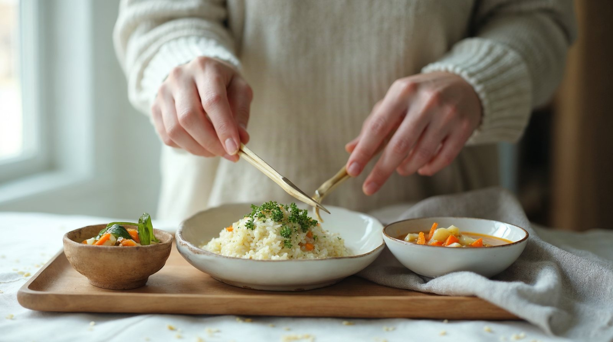
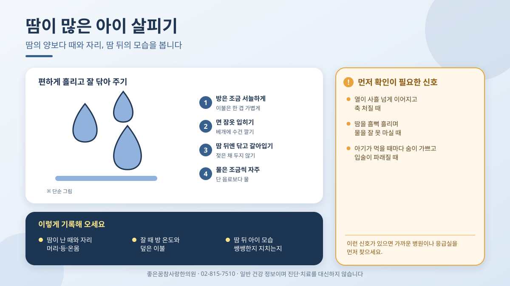

이종호 한의사 감수좋은꿈참사랑한의원 대표원장 (한의사 면허번호 19769)발행 2026-11-26 · 수정 2026-11-26
이 글의 차례
저녁 식탁에서 아이가 밥을 먹고 있습니다. 몇 숟가락 뜨지 않았는데 이마와 콧등에 땀방울이 송골송골 맺히고, 목덜미까지 금세 촉촉해집니다. 잠자리에 들면 머리가 금세 젖어 베개에 동그란 자국이 남고, 아침이면 잠옷이 축축합니다. 옆에서 자는 형제는 멀쩡한데 이 아이만 그렇습니다. 부모님은 밤사이 몇 번이고 일어나 땀을 닦아 주게 됩니다.
진료실에서 땀 많은 아이 이야기를 하시는 부모님은 대개 두 가지를 걱정하십니다. 어디가 약해서 그런 건 아닐까, 그리고 땀을 흘린 뒤 식으면서 감기에 걸리지 않을까. 둘 다 충분히 드실 만한 걱정입니다.
먼저 안심시켜 드리고 싶은 것은, 아이는 원래 어른보다 땀이 많다는 점입니다. 몸집에 비해 열을 많이 만들고, 체온을 조절하는 힘이 아직 자라는 중이기 때문입니다. 특히 잠들고 처음 한두 시간 머리에 땀이 흥건한 것은 많은 아이에게서 보이는 모습입니다.
다만 땀과 함께 쉽게 지치고, 입이 짧고, 감기를 달고 산다면 땀을 몸의 다른 신호와 함께 묶어 살펴볼 필요가 있습니다. 그래서 저는 땀의 양보다 땀이 나는 때와 자리, 땀을 흘린 뒤 아이의 모습을 먼저 여쭙니다.
아이는 왜 어른보다 땀이 많을까요?
아이는 하루 종일 쉬지 않고 움직이고, 자라기 위해 몸 안에서 열을 많이 만듭니다. 몸집에 비해 피부 면적도 넓어 땀을 내서 열을 식히는 일이 잦습니다. 그래서 같은 방에 있어도 어른은 선선하다고 느낄 때 아이는 덥다고 하는 경우가 많습니다.
잠들 무렵 땀이 많은 것도 자연스러운 흐름입니다. 잠에 들면서 몸은 체온을 조금 낮추려고 하는데, 그 과정에서 머리와 목, 등에 땀이 납니다. 깊은 잠에 빠지는 처음 한두 시간에 땀이 몰리고, 새벽에는 줄어드는 경우가 많습니다.
먹을 때 땀이 나는 것도 비슷합니다. 따뜻하거나 매운 음식을 먹으면 몸이 데워지며 얼굴과 머리에 땀이 맺힙니다. 아이가 급하게 먹거나 국물을 좋아한다면 더 그렇습니다.
왜 어떤 아이는 유난히 땀이 많을까요
한의학에서는 땀을 몸의 문이 열리고 닫히는 모습으로 봅니다. 열이 많아 문이 자주 열리는 아이가 있고, 문을 닫는 힘이 약해 조금만 움직여도 땀이 새는 아이가 있습니다. 같은 땀이라도 그 바탕이 다르면 살피는 방향도 달라집니다.
열이 많은 쪽의 아이는 얼굴이 쉽게 붉어지고, 찬 것을 찾으며, 변이 단단하게 굳고 잠을 뒤척이는 경우가 많습니다. 땀은 머리와 가슴에 많이 나고, 땀을 흘리고 나서도 쌩쌩한 편입니다.
기운이 약한 쪽의 아이는 조금만 움직여도 땀이 나고, 땀을 흘린 뒤 쉽게 지치며, 입이 짧고 얼굴이 창백한 경우가 많습니다. 땀이 식으면서 으슬으슬해하고 감기에 자주 걸리기도 합니다.
물론 아이를 둘 중 하나로 딱 나눌 수는 없습니다. 실제로는 이 두 모습이 섞여 있는 경우가 많고, 계절과 컨디션에 따라 달라지기도 합니다. 그래서 진찰과 함께 부모님의 관찰이 무척 중요합니다.
낮땀과 밤땀은 어떻게 다르게 보나요?
낮에 놀거나 먹을 때 나는 땀은 대개 몸의 활동과 함께 움직입니다. 움직이지 않고 가만히 있을 때도 땀이 줄줄 나고, 그 뒤에 쉽게 지친다면 조금 더 관심을 두고 봅니다.
밤땀은 잠든 지 얼마 뒤에 나는지가 중요합니다. 잠들고 처음 한두 시간 머리에 땀이 나는 것은 흔합니다. 새벽까지 온몸이 흠뻑 젖고, 잠을 자주 깨며, 아침에 개운하지 않다면 방 온도와 이불부터 점검하고, 그래도 이어지면 진료를 받아 보시는 것이 좋습니다.
코가 막혀 입을 벌리고 자거나 코를 고는 아이도 숨 쉬는 데 힘을 쓰느라 밤에 땀을 많이 흘리기도 합니다. 땀과 함께 숨소리도 한번 들어 봐 주세요.
다른 이유를 먼저 확인할 때
드물지만 땀이 다른 문제의 신호인 경우도 있습니다. 열이 오래 이어지면서 밤마다 흠뻑 젖고 체중이 줄거나, 목이나 겨드랑이에 멍울이 만져지거나, 자꾸 피곤해하고 얼굴이 창백해진다면 소아청소년과에서 먼저 확인을 받으셔야 합니다.
갑상선 기능이 지나치게 활발하면 땀과 함께 심장이 빨리 뛰고, 잘 먹는데도 살이 빠지며, 손이 떨리고 쉽게 짜증을 내는 모습이 보일 수 있습니다.
손바닥과 발바닥, 겨드랑이처럼 한정된 자리에만 땀이 많고 긴장할 때 더 심해진다면 국소 다한증일 수 있습니다. 이런 경우는 자라면서 더 뚜렷해지기도 해서 따로 살펴봅니다.
땀이 많은 아이에게 생기기 쉬운 불편
땀이 많으면 접히는 자리에 땀띠가 잘 생기고, 아토피가 있는 아이는 가려움이 늘기도 합니다. 땀이 식으면서 몸이 차가워져 감기에 잘 걸리고, 밤잠이 자주 깨면 낮에 짜증이 늘거나 입맛이 줄기도 합니다.
땀으로 물이 빠져나가는데 물을 충분히 마시지 않으면 변이 굳기 쉽습니다. 특히 여름에는 땀이 많은 만큼 물을 자주 마시게 해 주세요. 단 음료보다는 물이나 보리차처럼 담백한 것이 좋습니다.
계절마다 땀은 어떻게 달라지나요?
여름에는 땀이 많은 것이 당연하지만, 땀띠와 물 부족을 함께 챙겨야 합니다. 바깥 놀이 뒤에는 미지근한 물로 가볍게 씻기고, 접히는 자리를 잘 말려 주세요. 낮잠을 잘 때도 바람이 잘 통하는 곳에 눕혀 주시면 좋습니다.
겨울에는 땀이 적을 것 같지만, 난방이 센 실내와 두꺼운 옷 때문에 오히려 땀이 차는 아이가 많습니다. 땀이 찬 채로 찬 바깥에 나가면 금세 식어 몸이 움츠러듭니다. 외출 전 등에 땀이 차 있지 않은지 한 번 만져 보세요.
봄과 가을에는 아침저녁으로 기온 차가 커서 옷차림을 맞추기 어렵습니다. 얇은 겉옷을 가방에 넣어 두고, 아이가 덥다고 하면 바로 벗을 수 있게 해 주세요.

먹는 것과 땀은 어떻게 이어지나요?
맵고 뜨거운 음식, 기름진 음식, 단 음료를 자주 먹으면 몸에 열이 쌓여 땀이 늘어나는 아이가 있습니다. 반대로 찬 음료와 아이스크림을 많이 먹으면 속이 차가워져 입맛이 줄고 기운이 처지는 아이도 있습니다.
그래서 저는 땀 많은 아이의 식단을 볼 때 무엇을 끊으라고 하기보다 한쪽으로 치우치지 않았는지를 봅니다. 고기와 채소, 곡식이 고르게 들어가고, 간식과 음료가 끼니를 밀어내지 않는지가 기본입니다.
형제와 비교하지 않아도 됩니다
같은 집에서 같은 밥을 먹고 자라도 아이마다 땀이 나는 모습은 다릅니다. 형제가 멀쩡한데 이 아이만 땀을 흘린다고 해서 이 아이가 약하다는 뜻은 아닙니다. 체질과 활동량, 잠버릇이 다르기 때문입니다.
아이 앞에서 "너는 왜 이렇게 땀을 흘리니" 같은 말을 자주 하면, 아이는 자기 몸을 부끄러워하게 될 수 있습니다. 땀을 닦아 주며 "오늘 신나게 놀았구나" 하고 말해 주는 것만으로도 아이는 편안해합니다.
땀과 잠, 감기는 한 줄로 이어져 있습니다
밤에 땀을 많이 흘리는 아이는 잠이 자주 끊기기 쉽고, 잠이 부족하면 낮에 쉽게 지치고 입맛이 줄어듭니다. 잘 먹지 못하면 기운이 떨어져 감기에 잘 걸리고, 감기를 앓는 동안 땀은 또 늘어납니다. 이렇게 땀과 잠, 감기가 한 줄로 이어져 돌아가는 아이가 적지 않습니다.
그래서 이 줄의 어느 한 곳만 풀어도 나머지가 함께 느슨해지는 경우가 있습니다. 방 온도를 맞춰 잠을 덜 깨게 하거나, 저녁을 조금 일찍 먹여 속을 편하게 하거나, 감기 뒤 회복기에 쉬는 시간을 넉넉히 주는 것처럼요. 어디서부터 풀지는 아이마다 다르니 진료실에서 함께 정해 봅니다.
먼저 이렇게 여쭙니다
처음 오시면 대략 이런 순서로 여쭙니다. 미리 생각해 오시면 이야기가 수월해집니다.
- 땀이 나는 때(먹을 때, 놀 때, 잠들 때, 새벽)와 자리
- 땀을 흘린 뒤 아이의 모습(쌩쌩한지, 지치는지, 으슬으슬한지)
- 잘 때 방 온도와 이불 두께, 잠옷 재질
- 입맛과 좋아하는 음식, 대변 상태
- 감기에 걸리는 횟수와 회복 기간
- 코골이나 입 벌리고 자는 습관이 있는지
모든 질문에 정확히 답하지 못하셔도 괜찮습니다. 일주일 정도 땀이 난 때와 그날 있었던 일을 적어 오시면 이야기의 절반은 시작된 셈입니다.
일상에서 먼저 해 볼 수 있는 것
땀은 막는 것이 아니라 편하게 흘리고 잘 닦아 주는 것이 먼저입니다. 아래 가운데 할 수 있는 것부터 골라 보세요.
- 잘 때 방은 조금 서늘하게, 이불은 한 겹 가볍게
- 땀을 잘 흡수하는 면 잠옷 입히기
- 베개에 수건을 깔아 두고 젖으면 바꿔 주기
- 땀을 흘린 뒤에는 마른 수건으로 닦고 젖은 옷 갈아입히기
- 저녁은 너무 맵거나 뜨겁지 않게, 잠들기 직전 많이 먹지 않기
- 물은 놀이 사이사이 조금씩 자주 마시기
부모님이 춥다고 느끼는 온도에 맞춰 아이를 덮어 주면 아이에게는 더운 경우가 많습니다. 아이가 자다가 이불을 걷어차는 것은 덥다는 신호일 수 있습니다. 등에 손을 넣어 봤을 때 따뜻하고 보송하면 적당한 상태입니다.
겨울에 바깥에 나갈 때 겹겹이 입히면 움직이는 동안 땀이 차고, 멈췄을 때 식으면서 오히려 으슬으슬해집니다. 얇은 옷을 여러 겹 입히고 실내에 들어오면 한두 겹 벗기는 방법이 좋습니다.
기운이 약해 쉽게 지치는 아이라면 잠을 충분히 재우고, 한 번에 많이 먹이기보다 조금씩 자주 먹이는 쪽이 편할 수 있습니다. 바깥에서 햇볕을 받으며 걷는 시간도 기운을 기르는 데 도움이 됩니다.
한의원에서 함께 살필 수 있는 경우
- 조금만 움직여도 땀이 나고 땀을 흘린 뒤 쉽게 지치는 경우
- 땀이 식으면서 감기에 자주 걸리고 회복이 더딘 경우
- 밤마다 땀에 젖어 자주 깨고 아침에 개운하지 않은 경우
- 얼굴이 쉽게 붉어지고 변이 굳으며 잠을 뒤척이는 경우
- 입이 짧고 얼굴이 창백하며 땀이 많은 경우
좋은꿈참사랑한의원에 오시면 맥을 짚고 손발과 피부, 얼굴색을 살핀 뒤 땀의 흐름과 입맛, 대변, 잠을 함께 여쭙니다. 진찰한 내용을 바탕으로 집에서 바꿔 볼 것 하나와 함께 지금 아이에게 맞는 방법을 정합니다.
한약을 상의할 때는 아이의 나이와 체중, 지금 먹는 약이나 영양제를 모두 확인하고 신중하게 정합니다. 침이 필요하다고 판단되면 짧고 가볍게 진행하며, 아이가 싫어하면 다른 방법을 찾습니다. 다른 원인 확인이 먼저 필요해 보이면 소아청소년과 진료를 안내합니다.
이렇게 기록해 오시면 상담이 쉬워집니다
땀은 날마다 조금씩 다르게 나기 때문에, 진료실에서 잠깐 보는 것보다 집에서 쌓은 기록이 훨씬 많은 것을 알려 줍니다. 2주 정도만 간단히 적어 보세요.
- 땀이 많이 난 때와 자리(머리, 목, 등, 온몸)
- 잘 때 방 온도와 덮은 이불
- 잠든 시각과 깬 횟수, 아침 컨디션
- 그날 먹은 저녁과 간식
- 바깥 놀이나 운동을 한 날
- 감기 기운이나 열이 있던 날
빠진 날이 있어도 괜찮습니다. 기록을 나란히 놓고 보면 땀이 많았던 날과 생활 사이의 연결이 보이기 시작하고, 그것이 다음 걸음을 정하는 실마리가 됩니다.
땀을 아이의 언어로 읽어 주세요
땀은 아이 몸이 스스로 열을 조절하며 하는 말입니다. 대부분은 잘 자라고 있다는 신호이고, 가끔은 조금 쉬어 가야 한다는 신호이기도 합니다. 부모님이 그 말을 차분히 들어 주시면 됩니다.
이번 주에는 잘 때 이불 한 겹 줄이기와 베개 수건 하나만 해 보세요. 그것만으로도 밤에 깨는 횟수가 달라지는 아이가 있습니다.
땀이 많다는 것은 그만큼 아이가 열심히 움직이고 자라고 있다는 뜻이기도 합니다. 걱정스러운 눈으로만 보기보다, 오늘 하루 아이가 얼마나 신나게 놀았는지를 함께 떠올려 주세요.
그리고 땀을 흘린 뒤 금세 기운을 되찾는지, 지쳐서 눕고 싶어 하는지를 지켜봐 주세요. 그 차이가 진료실에서 가장 먼저 여쭙고 싶은 이야기입니다. 짧은 메모 한 줄이면 충분합니다. 다음에 오시면 그 사이의 땀 기록부터 함께 펼쳐 보겠습니다.
이런 증상은 먼저 확인이 필요합니다
- 땀을 흠뻑 흘리며 열이 사흘 넘게 이어지고 아이가 축 처지거나 물을 잘 못 마시는 경우
- 아기가 먹을 때마다 땀을 흘리며 숨이 가쁘고 입술이 파래지거나 잘 자라지 않는 경우
이런 신호가 있으면 한의원보다 가까운 병원이나 응급실을 먼저 찾으세요.
함께 읽으면 좋은 글
- 아이가 자면서 땀을 흠뻑 흘릴 때는 무엇을 먼저 살피나요?
- 땀이 많거나 적다고 하면 진료실에서 무엇을 묻나요?
- 손바닥·발바닥·겨드랑이에 땀이 너무 많은 다한증은 어떻게 살피나요?
- 여름에 땀이 차는 곳마다 붉은 좁쌀 같은 것이 올라올 때는 어떻게 살피나요?
- 아이가 감기에 자주 걸리고 코가 막힐 때는 어떤 점을 살펴보나요?

여쭙는 것
- 땀이 나는 때(먹을 때, 놀 때, 잠들 때, 새벽)와 자리
- 땀을 흘린 뒤 아이의 모습(쌩쌩한지, 지치는지, 으슬으슬한지)
- 잘 때 방 온도와 이불 두께, 잠옷 재질
생활에서 해 볼 것
- 잘 때 방은 조금 서늘하게, 이불은 한 겹 가볍게
- 땀을 잘 흡수하는 면 잠옷 입히기
- 베개에 수건을 깔아 두고 젖으면 바꿔 주기
한의원에서 함께 살필 것
- 조금만 움직여도 땀이 나고 땀을 흘린 뒤 쉽게 지치는 경우
- 땀이 식으면서 감기에 자주 걸리고 회복이 더딘 경우
- 밤마다 땀에 젖어 자주 깨고 아침에 개운하지 않은 경우
먼저 확인이 필요한 신호
- 땀을 흠뻑 흘리며 열이 사흘 넘게 이어지고 아이가 축 처지거나 물을 잘 못 마시는 경우
- 아기가 먹을 때마다 땀을 흘리며 숨이 가쁘고 입술이 파래지거나 잘 자라지 않는 경우
한눈에 보는 표
| 구분 | 핵심 |
|---|---|
| 여쭙는 것 | 땀이 나는 때(먹을 때, 놀 때, 잠들 때, 새벽)와 자리 땀을 흘린 뒤 아이의 모습(쌩쌩한지, 지치는지, 으슬으슬한지) |
| 생활에서 해 볼 것 | 잘 때 방은 조금 서늘하게, 이불은 한 겹 가볍게 땀을 잘 흡수하는 면 잠옷 입히기 |
| 한의원에서 함께 살필 것 | 조금만 움직여도 땀이 나고 땀을 흘린 뒤 쉽게 지치는 경우 땀이 식으면서 감기에 자주 걸리고 회복이 더딘 경우 |
| 먼저 확인이 필요한 신호 | 땀을 흠뻑 흘리며 열이 사흘 넘게 이어지고 아이가 축 처지거나 물을 잘 못 마시는 경우 아기가 먹을 때마다 땀을 흘리며 숨이 가쁘고 입술이 파래지거나 잘 자라지 않는 경우 |
자주 묻는 질문
아이가 자면서 머리에 땀을 많이 흘리는데 괜찮은가요?
잠들고 처음 한두 시간 머리에 땀이 나는 것은 많은 아이에게서 보이는 모습입니다. 새벽까지 온몸이 젖고 자주 깬다면 방 온도와 이불을 먼저 점검하고, 이어지면 진료를 받아 보세요.
땀이 많으면 몸이 허약하다는 뜻인가요?
꼭 그렇지는 않습니다. 열이 많아 땀이 나는 아이도 있고, 기운이 약해 땀이 새는 아이도 있습니다. 땀을 흘린 뒤 아이의 모습과 입맛, 감기 횟수를 함께 봐야 알 수 있습니다.
땀을 많이 흘리면 물을 얼마나 마시게 해야 하나요?
정해진 양보다 놀이 사이사이 조금씩 자주 마시게 해 주세요. 소변 색이 진하거나 입술이 마르면 물이 부족하다는 신호일 수 있습니다.
아이도 한약을 먹을 수 있나요?
아이의 나이와 체중, 지금 먹는 약이나 영양제를 모두 확인한 뒤 신중하게 정합니다. 진찰 후 필요하다고 판단될 때 상의하며, 먹기 어려워하면 다른 방법을 함께 찾습니다.
땀을 줄이려고 방을 춥게 해도 되나요?
너무 춥게 하면 오히려 잠을 설칠 수 있습니다. 조금 서늘하다 싶은 정도로 맞추고 이불을 가볍게 하며, 등에 손을 넣어 봤을 때 보송한지를 기준으로 삼아 보세요.
좋은꿈참사랑한의원은 재진 때 지난번 이야기부터 이어서 여쭙니다. 진료시간과 예약은 오시는 길에서 확인하세요.
어디서 상담받을 수 있나요?
좋은꿈참사랑한의원은 서울 동작구 만양로2길 2 신성빌딩 3층·5층(서울 동작구 상도동, 7호선 상도역 3번 출구 근처)에 있습니다. 한의사 3명(이종호 대표원장, 조영기 수석진료원장, 정원영 진료원장)이 진료합니다. 진료시간은 평일 09:30~20:00(점심 13:00~14:00), 토·일·공휴일 09:30~15:00이며, 방문 전 전화로 확인을 권합니다. 예약은 네이버 예약, 카카오톡 상담, 전화 02-815-7510로 받습니다.
이 글은 일반적인 건강 정보이며 개인의 진단이나 치료를 대신하지 않습니다. 증상이 있거나 복용 중인 약이 있다면 진료를 통해 확인하세요. 치료 효과는 개인마다 다를 수 있습니다.
작성 기준: 일반적으로 알려져 있는 건강 정보를 참고해 정리했습니다(대표원장 감수). 증상 기록은 1~2주 동안 하루 1회, 비슷한 시간에 적어 오시면 지난 상태와 비교하기 쉽습니다.